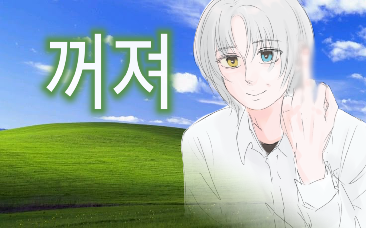

| 이름 | 소나타 (Sonata) |
|---|---|
| 출생 | 12024년 |
| 노이렌트 | |
| 신체 | 180cm |
| 학력 | 세린영재교육원 자애중학교 메르헨과학교육원 노이렌트과학기술원 |
1. 개요
루시드 연구소의 연구원 소나타.
2. 특징
준비중
2.1. 성격
조용하고 이성적인 현실주의자(realist)이며 동시에 위험을 감수할 각오가 된 실현자(realizer).
차분하며 계산적인 성격. 겉으로 보기에 말수가 적고 장난기 없는 모습.
언제나 머릿속으로 복잡한 계산을 끊임없이 돌리고 있다.
관찰력이 매우 예리해 주변의 미묘한 변화나 흐름을 잘 읽는다.
자신만의 가치관이 확고하나 겉으로 강하게 드러내지는 않으며 조용히 행동으로 밀어붙이는 편이다.
위험을 감수할 수 있는 의지가 돋보이고 중대한 결정 사항에는 적극적으로 개입할 수 있을 정도로 판단이 빠르고 결단력있다.
누구보다 이성적인 현실주의자이지만 무모한 프로젝트를 가장 많이 진행하는데, 이는
소나타가 자기확신을 기반으로 현실을 왜곡하기 때문이다.
자기애에 가까운 본인의 능력에 대한 확신을 가졌기에 불가능을 회피하기보다는 불가능을 스스로 가능한 영역으로 확장시켜야 한다고 생각하며
동시에 그걸 해낼 수 있는 사람은 자신 뿐이라고 주장하는 등 다소 오만한 태도를 보인다.
이런 사고방식을 바탕으로 타인에 대한 무신뢰에서 비롯된 독단적인 행동을 보이기도 하지만,
실제로 소나타가 꽤나 능력있는 편이며 실험 성공률도 높고 어차피 말해 봤자 듣지도 않기 때문에
연구원들도 이 부분에 대해서 따로 건드리지 않는다
이러한 성격의 근원은 유아기와 청소년기를 거치며 자연스럽게 교정되거나 조율되지 않고 오히려 강화된 자기중심성에 있다.
대부분의 사람들은 어린 시절 누구나 ‘나는 특별하다’거나 ‘무엇이든 할 수 있다’는 과도한 자기확신을 가지나,
성장 과정에서 현실 검증과 사회적 상호작용을 통해 이를 수정해 나간다.
그러나 소나타는 또래에 비해 비상한 두뇌와 이를 입증할 만한 실제 성취 경험이 풍부했기에 오히려 ‘나는 다르다’, ‘나는 할 수 있다’라는 자기확신이 반복적인 성공을 통해 더욱 견고해졌고,
이것이 현재의 극단적으로 현실 왜곡적인 사고방식과 독단적 태도의 기반이 되었다고 할 수 있다.
(루시드 제외).
모든 연구원들은 소나타가 도덕적으로 결함이 있다고 평가하는데, 이는
단순히 악의를 가졌거나 사이코패스같이 공감 능력이 결여된 것이 아니라
효율과 결과를 최우선시하는 가치관에서 비롯된 영향이 더 크다.
어떤 행위든 본인이 이해 가능한 목적, 성과가 있으면 정당화될 수 있다고 여기며
때때로 타인의 감정이나 사회적 윤리, 도덕 규범을 비효율로 간주한다.
대부분의 상황에서 감정, 도덕, 윤리, 심지어 법까지도 우선시되어야 할 판단 기준이 아닌 참고 자료 정도로 여긴다.
앞서 이야기했듯 주변의 미묘한 변화를 잘 읽기 때문에 타인의 감정도 쉽게 파악은 가능하다.
본인이 내킬 때는 어느 정도 타인의 편의를 봐주기도 한다. 보편적인 윤리 기준도 규범도 본인이 내킨다면 지킨다.
단지 스스로 생각하기에 그래야 할 이유가 없으니까 무시하는 것 뿐이다.(마이웨이)
근데 어쨌든간에, 사실 인성이 안 좋은 게 맞긴 하다.

2.2. 외형
밝은 회색 머리칼에 차분한 인상을 지닌 남성.
지적인 분위기의 미청년이며 잘생겼다는 말을 자주 듣는다.
가장 큰 특징은 오드아이라는 점. 왼쪽 눈은 벽안, 오른쪽 눈은 금안이다. 유전자 편집으로 양쪽 부모님의 눈 색을 모두 물려받았다.
3. 행적
준비중
3.1. 학창시절
준비중
3.2. 루시드 연구소
준비중
4. 관계
준비중